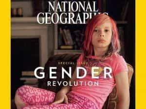

Michael is the author of Staying Married in a Degenerate Age. Follow him on Twitter or Facebook. You can read more of his writing at Honor and Daring.


Girl Power is ubiquitous. Whenever you watch a commercial, go to see a movie, or enjoy your favorite sitcom, you’ll almost certainly be exposed to some form of a Girl Power message. Professionals tell us that it is a harmless way to boost the self-esteem of girls. In reality, it is indoctrinating our children with a feminist message that is undermining our entire culture.
The Alien series was groundbreaking in that it featured a female heroine. All the males in the series are weak or evil.
Girl power is the feminist message that whatever boys can do, girls can do better. The idea is that women are underrepresented among the ranks of corporate CEOs, soldiers, and scientists because they were oppressed by the patriarchy while growing up. Feminists theorize that if girls could just be told that they were powerful, we’d gradually see patriarchy rolled back.
Now, the idea that women are oppressed by the patriarchy is pure nonsense. The patriarchy has been under attack since the French Revolution. By the 1970s, most of the vestiges of true patriarchy were gone. The fathers of today are not patriarchs, but weak, permissive versions of the real thing.
So if the patriarchy is not keeping women down, what is? In truth, nothing is. Women are inherently different from men. Whereas men are naturally wired to be providers, women are naturally nurturers. The reason there are not more female CEOs is because most women are not willing to sacrifice the good of their families for the good of some globalist corporation or for a fat paycheck. Rather than bemoaning this, feminists should celebrate the fact that women are free to do what really matters to them.
Nick Jr.’s show “Princess Knight” involves a princess who is also a knight in shining armor. No need for a hero, the girl can rescue herself.
Girl power programing starts early. I have a four-year-old son who sometimes watches Nick Jr., a network targeted at children ages 2-5. All of the shows carry some girl power content. One of the most popular shows in Nick Jr.’s line up is “Paw Patrol,” a show about puppies who go on rescue missions to help people. My son’s favorite puppy is Marshall, a Dalmatian puppy who drives a fire truck. Like the other boy puppies, Marshall ends up making a lot of mistakes. He’s clumsy and falls often. On the other hand, the girl puppies never make a mistake.
Nick Jr. has shows that are specifically targeted at girls. “Shimmer and Shine” is about a little girl and her two friends who are genies. Male characters play a very minor role in Shimmer and Shine, if they do at all. The show is filled with cutesy things and even the color palette is in pastels—something that would more likely appeal to girls.
On the other hand, there are no shows that specifically target boys that don’t also have a huge girl focus. “Blaze and the Monster Machines” is a show that teaches math and science. The main character is a boy, but he has a female side-kick who happens to be a mechanic who can fix anything. How many female auto mechanics do you know? In the popular “Peppa Pig” series, children are taught that fathers are kind but hapless. The “Daddy Pig” figure does something in almost every episode that makes him look stupid. The overarching message of these children’s cartoons is that girls can be anything and they will do a great job. Boys might be good but they will make mistakes, unlike their female peers. And when boys grow up, they can look forward to being bumbling fathers.
The girl power drumbeat increases once children become school age. Schools have programs that have the goal of getting more girls into STEM (Science, Technology, Engineering, and Math). The US soccer organization has a special program called “SheBelieves” intended to “inspire young girls and women and encourage them to accomplish their goals and dreams, athletic or otherwise.”
Do I even need to mention that there is no similar program to encourage young boys? Girl power gets pushed through comic books that are hell bent on turning every male super hero into a woman. Finally, girl power is pushed by Hollywood by such movies as Star Wars: Rogue One. They couldn’t even leave Tolkien’s Hobbit alone. Director Peter Jackson felt compelled to add a girl power elf to the movie that didn’t exist in the book.

Sorry Lefties. Your dream of being ruled by Hillary Stormborn were derailed by the Trump Train.
And girl power messages do not stop once women become adults. Commercials aimed at women frequently have an underlying message that women are “tough.” It is a cliché to see a commercial where a young woman is throwing a punch or a kick to demonstrate how “independent” she is. But the most flagrant example of girl power came during the last season of Game of Thrones. The Game of Thrones writers, being fully aware that Hillary would be the prospective Democrat nominee, crafted their storyline to accustom viewers with a powerful female ruler.
The script had the white-haired queen, Daenerys Stormborn, whose chief advisor is a dwarf, cementing an alliance with a Lesbian princess (Yara Greyjoy), whose servant is an emasculated man (Yara’s brother Theon). Thus we had the ideal girl power utopia: powerful women ruling over weak men who have had their balls cut off rendering them permanently subservient.
The problem with girl power is that it doesn’t actually achieve its goal of turning girls into happy, well-adjusted, confident women. The reverse is true. In reality, girl power hurts girls by making girls feel obliged to do things that are not in line with their natural strengths or interests. Girl power pushes girls towards STEM subjects, but while some girls have a natural aptitude for the sciences, most of them will be more attracted to liberal arts. This is as it should be because in the natural order of things, girls will eventually grow up to become mothers, and mothers are responsible for handing on the culture to the next generation.
Girl power also hurts girls by setting unrealistic expectations. Girl power leads girls to believe that they train hard enough, they can be just as good as boys at sports. Sadly, the vast majority girls will never be able to perform at the same physical level as boys. Even the US Women’s national soccer team, some of the best female players in the world, were easily beaten by a bunch of high school boys.
Girl power also hurts boys. Boys who are growing up today are subjected to a constant barrage of messages telling them that they are not as good as girls. There are no self-esteem programs for boys. Boys are not singled out for awards and honors when they do well in math. Even when boys watch a movie, they realize that they can never be heroes because girls can save themselves.

But I can’t help but wonder if girl power is not having an even darker influence on boys. The past few years have seen an explosion in transgenderism: boys wanting to become girls, and girls wanting to become boys. While there are some girl-to-boy transgenders, most of them are boys who want to become girls. What could be driving this disturbing epidemic?
One cause is mentally ill mothers. Our society has created women who care more about virtue signaling than they do having a healthy family. These deranged women begin dressing their sons as girls from a young age. Children are very impressionable. The sick designs of an insane parent can set a healthy boy on a trajectory that will leave him actually believing that he is a girl.
But the other factor that is driving the transgender epidemic is girl power. Imagine being a boy and being told your entire life that you are second rate, but that girls are always special and magical and perfect. Is it possible that some boys, especially boys with weak or absent fathers, begin to wish that they too could become girls?
Girl power is social engineering and it is being done on a scale never seen before in history. But how do we stop it?
The answer to that lies with men. Men must have the courage to raise their sons and daughters in such a way that they can feel comfortable to embrace their natural masculine and feminine roles. For too long, fathers have delegated decisions about raising their children to mothers and “professionals.” The result has been a disaster.
Of course, the best way of being a good father is to embrace your own masculinity. Everyone who is reading this has been subjected to massive programming that guides men along the path of weakness and passivity. Dropping these disempowering traits and adopting strength and action will help our own lives and the lives of our children.
Be sure to check out Michael’s book Staying Married in a Degenerate Age.
Read More: Why You Should Be Thankful For “Girl Power” Songs